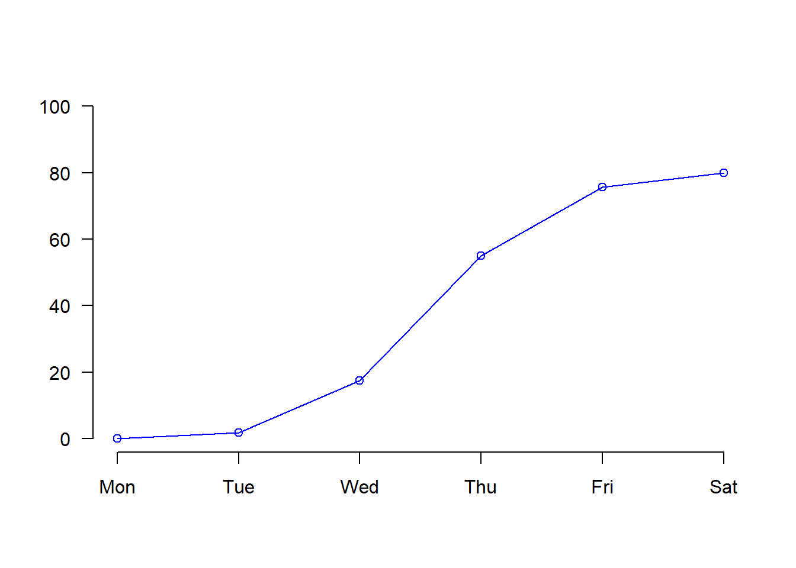
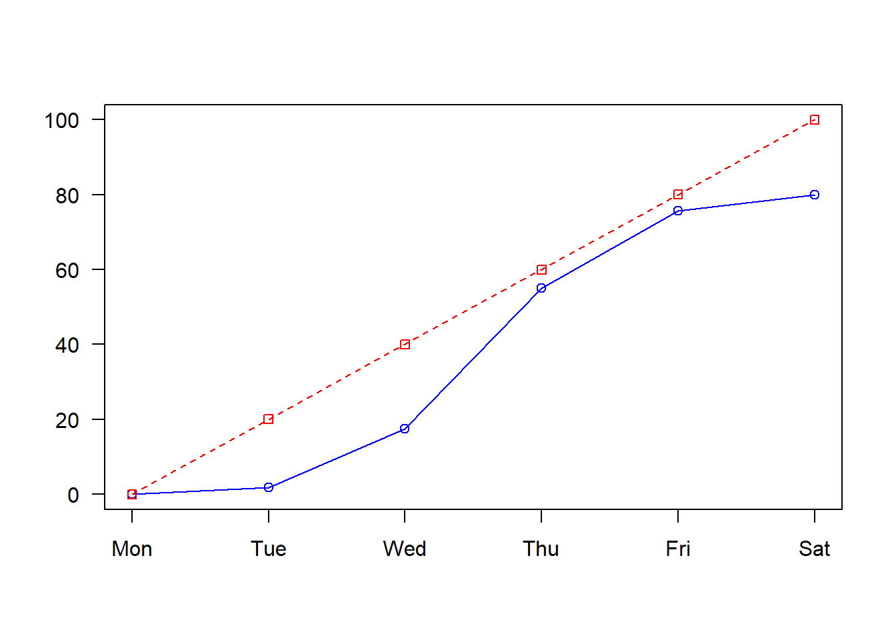

Graphics
This section of the course is largely extracted from R graphics Cookbook by Winston Chang available HERE.
Simple plots can easily be produced with the plotting functions in
base R. These are installed by default with R and do not
require any additional packages to be installed. They’re quick to type,
straightforward to use in simple cases, and run very quickly.
If you want to do anything beyond very simple plots, though, it’s generally better to switch to ggplot2. This is in part because ggplot2 provides a unified interface and set of options, instead of the grab bag of modifiers and special cases required in base graphics. Once you learn how ggplot2 works, you can use that knowledge for everything from scatter plots and histograms to violin plots and maps.
In this section, we will illustrate how to make a graph with base graphics and how to make a similar graph with the ggplot() function in ggplot2. Having both of these examples will help you transition to using ggplot2 for when you want to make more sophisticated graphics.
Get inspired by THE R GRAPH GALLERY
base package
Basic scatter and line charts
First we’ll produce a very simple graph using the values in a numeric vector:
Now we plot the treatment vector with default parameters.

We produced a simple scatter plot. Let make it a line plot:

We changed the type of plot to o which plot both
points and lines. Check
?plot to see a complete list and make a
line plot. By changing the argument type,
we are customizing the plot.
Plot customization

Title
We add a title with main argument and or a sub-title
with the sub argument.

Axis labels
We can customize our x and y axis label with the xlab
and ylab arguments respectively.

We can control the orientation of labels on axis using
las argument.


Point size
We can control the size of points in our plot using the
cex parameter.


Point shape
We can control the type of points in our plot using the
pch parameter.


Line weight
Similarly when plotting a line we control size with lwd
parameter.

Line type
We can also control the type of line with lty
parameter.

Color
An important parameter we can control is color. We can control color
or lines or points using the col argument.

You can find an extensive list of R colors here.
But you can also use hexadecimal code color here. You can also specify
rgb color and use define alpha to set
transparency.

par set or query graphical parameters. Among other uses,
you modify par to plot two graphs next to each others
par(mfrow = c(1, 2))
plot(treatment, type="p", cex=4, pch=20, col=myRed)
plot(treatment, type="p", cex=4, pch=20, col='#87736f')
Using par(mfrow = c(1, 2)), you split your graphical
window into a grid by specifying the number of row first and the number
of column them. Any modification using par will be applied
to next plots. You can terminated using dev.off().
## null device
## 1A lot of graphical parameters can be modified using par.
See the full list of set parameters using par() or
?par. Change will apply to all subsequent plots until your
reset your graphical parameters using dev.off().
Multiplot vectors plot
Index plot are generally use explore your data nut of course the
plot function will accept two vectors to be plotted against
each other.

We often want multiple lines in same plot. So if we want to plot scores for control and treatment against position we will need a new method.
We can add an additional line to our existing plot using the
lines() function.

Defining your limits
The new line doesn’t quite fit into our original plot. We can extend
our x or y axis by specifying values to xlim and
ylim arguments directly.
plot(treatment, type="o", col="blue",ylim=c(0,100))
lines(control, type="o", pch=22, lty=2, col="red")Instead of defining the axis limits explicitly we can compute the
y-axis values using the range function. This means any updates to our
data will be automatically reflected in our graph. range()
returns a vector containing the minimum and maximum of all the given
arguments.
Calculate range from 0 to max value of data.
## [1] 0 100Then plot using this range values as your limits
Customize axes
To be able to customize axes we need to turn off axes and annotations
(axis labels). We will then be able to specify them ourselves. We turn
of axis and annotation plotting using axes=FALSE and
ann=FALSE

We can create our own X axis by using the axis()
function. We specify the side argument for where to place
axis, the at argument to specify where to put axis ticks
and lab argument to specify labels for axis ticks.
plot(treatment, type="o", col="blue", ylim=g_range, axes=FALSE, ann=FALSE)
axis(side=1, at=1:6, lab=c("Mon","Tue","Wed","Thu","Fri","Sat"))
We can make our y axis with horizontal labels that display ticks at
every 20 marks in a similar way. We specify our side and
use seq() function to make axis tick postions for
at argument. We can use our y-axis range again to help
define how many ticks we need.
Framing plot
We can now add a box around our plot using the box()
function.
plot(treatment, type="o", col="blue", ylim=g_range, axes=FALSE, ann=FALSE)
axis(side=1, at=1:6, lab=c("Mon","Tue","Wed","Thu","Fri","Sat"))
axis(2, las=1, at=seq(0,g_range[2],by=20))
box()
And add back our control using the line argument.
plot(treatment, type="o", col="blue", ylim=g_range, axes=FALSE, ann=FALSE)
axis(side=1, at=1:6, lab=c("Mon","Tue","Wed","Thu","Fri","Sat"))
axis(2, las=1, at=seq(0,g_range[2],by=20))
lines(control, type="o", pch=22, lty=2, col="red")
box()
Legends
Finally we may wish to add a legend to out plot. We can add a legend
to current plot using the legend() function. We need to
specify where to place legend in plot, the names in legend to
legend argument and any additional point/line type
configuration we used e.g the color and shape.
plot(treatment, type="o", col="blue", ylim=g_range, axes=FALSE, ann=FALSE)
axis(side=1, at=1:6, lab=c("Mon","Tue","Wed","Thu","Fri","Sat"))
axis(2, las=1, at=seq(0,g_range[2],by=20))
box()
legend("topleft",legend=c("treatment","control"), col=c("blue","red"), pch=21:22, lty=1:2) 
Final
In our line plot we have already done a good job of making it easier to differentiate the lines as we have different line styles and different shape points. Other things we can do is also differentiate thickness. To make that final plot you can see that there are many lines of code we put together.
plot(treatment, type="o", col="blue", lwd=1, ylim=g_range,axes=FALSE, ann=FALSE)
axis(1, at=1:6, lab=c("Mon","Tue","Wed","Thu","Fri","Sat"))
axis(2, las=1, at=20*0:g_range[2])
box()
lines(control, type="o", pch=22, lty=2, col="red", lwd=2.5)
legend("topleft",legend=c("treatment","control"),col=c("blue","red"), pch=21:22, lty=1:2, lwd=c(1,2.5))
Palettes
~4% of people are color blind. In white males this number raises to
~10%. Considering the demographics in science, there will likely be
someone with color blindness in your meeting. Palette packages exist
that contain a curated collection colors. These can be themed for
anything, from La Croix flavors to Pokemon. A list of palettes can be
found here.
Some of the more useful palettes are designed to be color blind
friendly, like viridis. To get colors from the package you
just have to call the function with the number of colors you want.
## [1] "#440154FF" "#3B528BFF" "#21908CFF" "#5DC863FF" "#FDE725FF"Good data visualization
There are often a trade offs in creating good plots.
- Is it easy to digest and accesible to everyone?
- Is it engaging and appealing?
- Does it contain all the information with nothing superfluous?
- Is it the best way to tell the story I want to tell?
Fundamentals of Data Visualization by Claus O. Wilke is a good resource on the theory of making data visualizations the right way.
Histograms
Base graphics has a useful built-in function for histograms too. This
is the hist() function, which just needs a numeric
vector.

Similar customization exists as for other plots.

We can create more fine grained histogram by specify the number of
required bins to the breaks argument.
par(mfrow = c(1, 2))
hist(treatment, col="lightblue", ylim=c(0,5), cex.main=0.8, breaks = 2)
hist(treatment, col="lightblue", ylim=c(0,5), cex.main=0.8, breaks = 10)
## null device
## 1